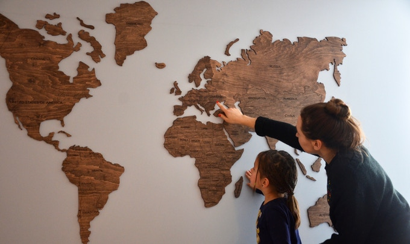
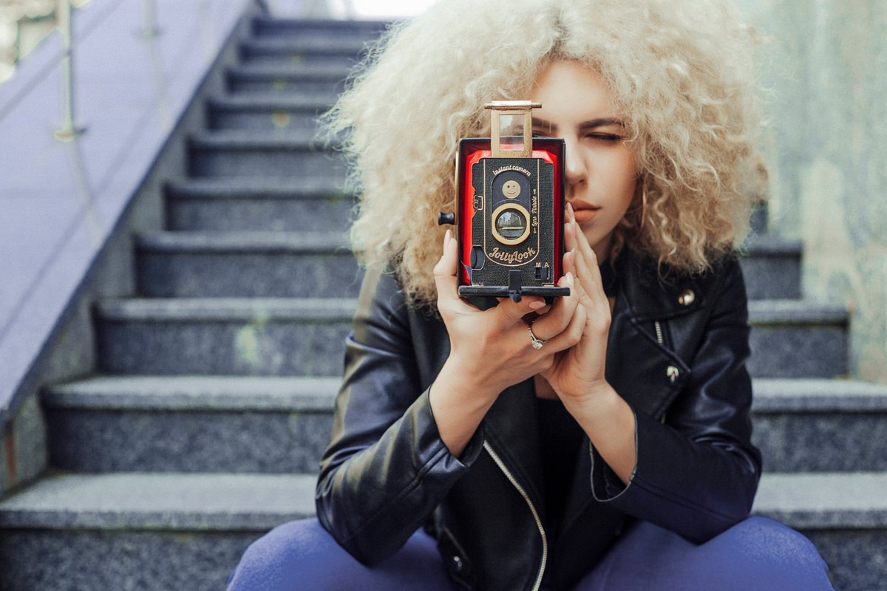
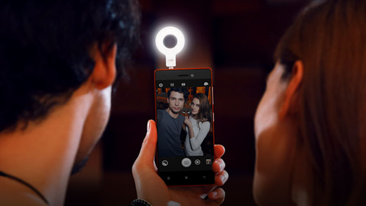
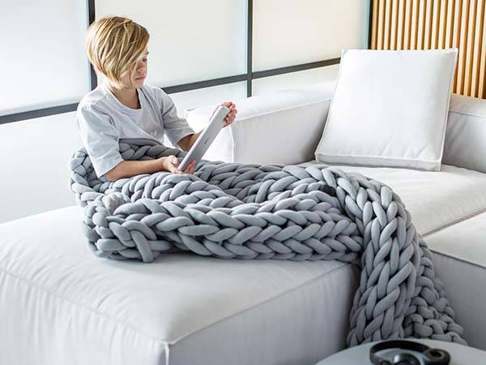

Топ-5 найуспішніших українських стартапів на Kickstarter
TripMyDream , Prometheus , Preply – ще декілька років тому про існування цих українських стартапів ніхто не здогадувався, а зараз вони стали успішними компаніями та активно завойовують західний ринок. Але що робити, коли немає грошей на власний проект? Якщо у вас є ідея та команда, але відсутні інвестиції, то можна спробувати залучити кошти на краудфандинговій платформі. Сьогодні ми розкажемо вам про топ-5 українських стартапів, які зібрали найбільше грошей на Kickstarter та втілили свої проекти в реальність.
Enjoy The Wood
Інвестиції: $ 530 000
Український стартап EnjoyTheWood зібрав понад 530 000 доларів на виготовлення 3D-карт світу з дерева. Це вже їхня третя компанія на Kickstarter та поки що найуспішніша. Раніше вони успішно завершили компанії по збору коштів на створення дерев’яних карт світу (понад $ 50 000) та карт міст світу ($100 000).
EnjoyTheWood – український сімейний стартап Ігоря та Марини Фостенко із міста Ірпінь. Компанія продає декоративні вироби з дерева в 72 країнах світу. Наприклад, ціна однієї карти стартує від 35 доларів та залежить від розміру та стилю. Зараз в команді працює 16 людей, а за весь час існування стартап продав більше 20 тисяч карт по всьому світу. Компанія активно розвивається та розширює асортимент продукції власного виробництва.
Jollylook
Інвестиції: $ 377 000
Стартап заснували розробники із Запоріжжя. Вони створили першу фотокамеру в світі з переробленого картону та двох лінз у ретро стилі та запустили кампанію на Kickstarter. Їхній винахід створив справжній фурор на краудфандинговій платформі та зібрав інвестицій на понад $ 377 000 з $ 15 000 заявлених на старті.
Завдяки колегам із українського стартапу PetCube вони також запустили виробництво в Китаї, але згодом перенесли до рідного Запоріжжя. За два роки існування проекту вартість камери зросла з 29 до 69 доларів. “Ми не просто продаємо камери, а створюємо співтовариство, яке захоплюється вінтажною фотографією”, – пишуть творці на сайті проекту. Також вони вже створили сайт та додаток, де покупці зможуть ділитися знімками та враженнями.
iblazr 2
Інвестиції: $ 253 000
Український стартап Concepter двічі виходив на Kickstarter із проектом iblazr. Iblazr – це LED-ліхтарик для мобільних пристроїв із синхронізацією через Bluetooth. Його створили українські розробники в Києві, а масове виробництво запустили в Китаї. .
Відмінність нової версій iblazr 2 від першої у формфакторі та покращених компонентах освітлення. Тому тепер пристрій можна використовувати при створенні фото не тільки з смартфоном чи планшетом, а й з дзеркальною фотокамерою. Також можна керувати температурою світла та одним “кліком” синхронізувати до 10 ліхтариків. За 29 днів на Kickstarter проект iblazr 2 зібрав $ 253 000 з $ 70 000 запланованих, тоді як перша версія лише $156,789 з $58 000. Зараз iblazr продаєтся в найбільших світових роздрібних мережах – Apple Store, Best Buy і Walmart, а також у понад 40 країнах світу.
Ohhio
Інвестиції: $ 204 000
Гігантські в’язані речі киянки Анни Мариненко дуже швидко підкорили користувачів Kickstarter. Пледи та шарфи з вовни мериноса зв’язані не спицями, а руками під брендом Ohhio у 2015 році зібрали понад $200,000 з початкової мети у $20,000. Зараз із проекту на краундфангингу вони виросли у інтернет-магазин та відправляють власну продукцію по всьому світу. Вартість стартує від 29 доларів за клубок пряжі та від 900 доларів за великий плед. За словами засновниці стартапу, їхня компанія більше орієнтується на західний ринок – Європу, США та Канаду.
Verum
Інвестиції: $ 185 000
Проект харківянина Романа Ландика за 30 днів зібрав $ 185 000 з стартових $ 30 000. Verum – це навушники для аудіофілів з унікальною, за словами творця, технологією відтворення звуку. Ідея цього стартапу з’явилася декілька років тому, коли Роман вирішив перетворити своє хобі конструювання навушників у бізнес, який приносить гроші.
Перед стартом компанії хлопець розіслав робочі прототипи навушників професійним оглядачам та розмістив на власному сайті посилання на їхні відгуки. Експерти відзначили якісний звук, невисоку вартість та солідний корпус пристрою. Ціна навушників і досі залишається незмінною – $349, що робить їх одними із найбюджетніших у професійній лінійці.
* У топ увійшли лише ті проекти, які вказали своє українське похождення.